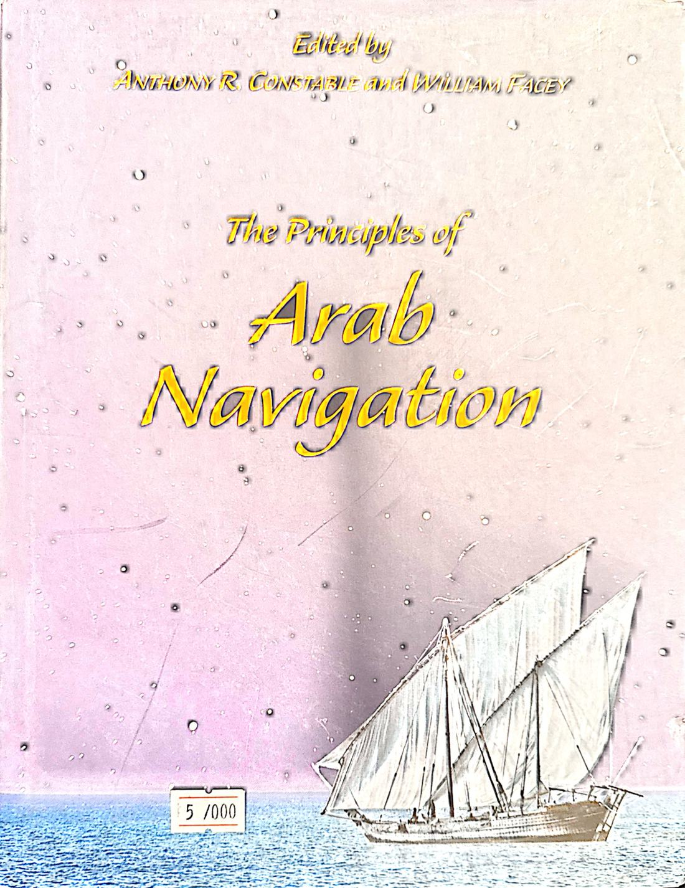

نُشر ٢٠١٣ · الغلاف والصفحات ٤٢ و٤٣ و٨٤ و٨٩ و٩٠ والفهرس
كتاب «أسس الملاحة العربية»: عيسى وعبدالوهاب ويوسف القطامي
ما هي
في فصل الملاحة العربية بعد ١٨٥٠ يستعمل الكتاب مثالا من «دليل المحتار» لعيسى، رحلة ذات أربع مراحل بمسارات النجوم، ليبين كيف كان النوخذة يحدد موقعه. وفي فصل د. يعقوب الحجي عن آلن فاليرز يُذكر عبدالوهاب بن عيسى القطامي من الملاحين الكويتيين الحقيقيين، وتُنشر شهادة الملاحة التي نالها في ٢ يوليو ١٩٣٨ من السفينة شورهام بالألوان، ويكتب الحجي أن فاليرز لو أبحر مع عبدالوهاب القطامي أو أمثاله من النواخذة «لظهرت صورة أكثر إيجابية عن الإبحار والملاحة الكويتية». ويُنقل وصف بوم سمحان ليوسف بن عيسى من كتاب فاليرز «بحار الرياح الموسمية».
أهميتها
كتاب علمي عن الملاحة العربية يستعمل طريقة عيسى نفسه ويذكر عبدالوهاب بين أمهر ملاحي الكويت.
صور الصفحات


ملاحظات
يضع فهرس الكتاب هذه الصفحات تحت: القطامي، عبدالوهاب بن عيسى (٨٤ و٨٩ و٩٠)، والقطامي، عيسى (٤٢ و٤٣)، والقطامي، يوسف بن عيسى (٨٩). نعرض هنا الصفحات الأولى فقط، ويرى أفراد العائلة بعد تسجيل الدخول كل الصفحات وعددها 7.
أسماء أخرى
المصادر
أنتوني كونستابل ووليم فيسي (تحرير)، The Principles of Arab Navigation، دار أرابيان ببليشنغ، ٢٠١٣.
كيف كُتب هذا النص: صفحات من كتاب منشور.
افتح في الموقع التفاعلي